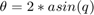

scale2deg
Calculate the axis-angle corresponding to a given quaternion.

Contents
Syntax
degree = scale2deg(in_quat)
Input Arguments
- in_quat -- Input quaternion(s) or quaternion vector(s)
Output Arguments
- degree - corresponding values, in deg
Notes
More info under http://en.wikipedia.org/wiki/Quaternion
Examples
scale2deg(0.1) scale2deg([0.1, 0.1, 0]) scale2deg([cos(0.1), 0, sin(0.1), 0]) scale2deg([cos(0.1), 0, sin(0.1), 0; cos(0.2), 0, 0, sin(0.2)])
ans =
11.4783
ans =
11.4783 11.4783 0
ans =
168.5408 0 11.4592 0
ans =
0 11.4592 0
0 0 22.9183